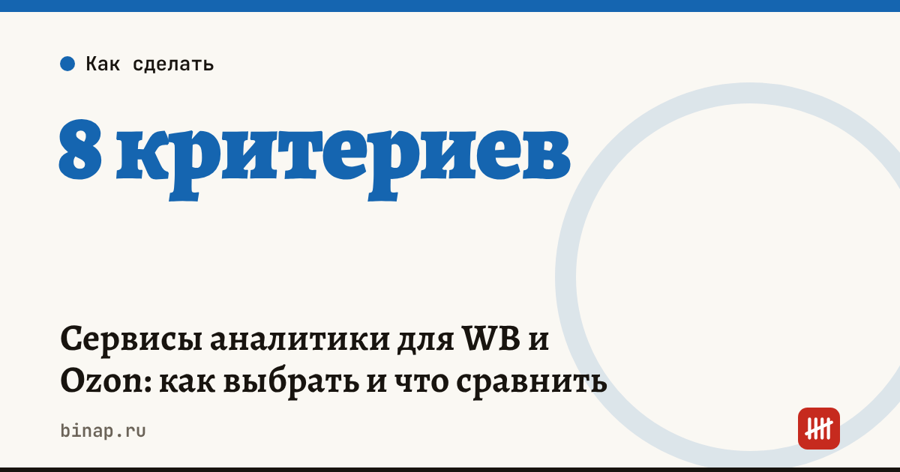

Сервисы аналитики для WB и Ozon: как выбрать и что сравнить

Сервис аналитики для Wildberries и Ozon стоит выбирать под свою задачу: найти нишу, следить за конкурентами или считать прибыль по своим товарам. Это разные инструменты, и платить за все функции сразу не нужно. Сравните 2–3 сервиса по одним и тем же критериям на пробном периоде, а потом посчитайте, окупится ли подписка.
Коротко
- Сначала задача: выбор ниши, мониторинг конкурентов, учёт своей прибыли или управление рекламой.
- Внешняя аналитика оценивает продажи конкурентов по косвенным данным — это оценка, а не точные цифры.
- Аналитика своего магазина строится на данных из вашего кабинета через API и показывает реальную прибыль.
- Сравнивайте сервисы на одном и том же товаре и периоде: расхождения покажут, кому верить.
- Подписка окупается, если решения по ней приносят больше, чем она стоит.
Сроки, изменения и разборы для ИП и самозанятых — каждое утро в Telegram и MAX. Подпишитесь, чтобы не пропустить.
Какие задачи решает аналитика
| Задача | Что нужно от сервиса | Откуда данные |
|---|---|---|
| Выбор ниши и товара | спрос, число продавцов, выручка лидеров, сезонность | оценка по открытым данным площадки |
| Мониторинг конкурентов | цены, остатки, позиции, отзывы | оценка по открытым данным |
| Прибыль своего магазина | выручка, комиссии, логистика, возвраты, реклама по каждому товару | ваш кабинет через API-ключ |
| Реклама | ставки, расход, заказы с рекламы, ДРР | ваш кабинет через API-ключ |
8 критериев сравнения
- Площадки: только WB, только Ozon или обе.
- Источник данных: оценка по открытым данным или ваш кабинет через API.
- Глубина истории: за сколько месяцев есть данные — важно для сезонных товаров.
- Частота обновления: раз в сутки или чаще.
- Юнит-экономика: считает ли сервис прибыль с единицы с учётом логистики, возвратов и налога.
- Выгрузка: можно ли выгрузить данные в таблицу.
- Доступы: какие права даёт API-ключ — только чтение или изменение цен и рекламы.
- Цена и тариф: что входит в тариф, лимиты на число товаров и запросов. Цены берите только с официальной страницы сервиса на дату сравнения.
Как проверить сервис на пробном периоде
- Возьмите свой товар, по которому знаете реальные продажи за прошлый месяц.
- Посмотрите, что показывают 2–3 сервиса по этому товару за тот же месяц.
- Сравните с данными кабинета: расхождение покажет, насколько точны оценки сервиса по чужим товарам.
- Проверьте, совпадает ли прибыль по своему товару с вашим расчётом в калькуляторе юнит-экономики.
Окупится ли подписка
Подписка окупается, если дополнительный маржинальный доход от решений по данным больше её стоимости.
Пример (расчёт редакции, цифры условные): подписка стоит 5 000 ₽ в месяц. Если благодаря данным вы отказались от товара, который принёс бы убыток 30 000 ₽, или подняли цену и получили на 10 000 ₽ больше маржинального дохода в месяц, подписка окупилась.
Подключить сервис аналитики для маркетплейсов: ссылка
Безопасность: давайте сервисам API-ключ только с теми правами, которые нужны, и отзывайте ключи, которыми не пользуетесь. Как читать данные о возвратах — анализ возвратов с нейросетью. Все шаги продавца — в разделе «Селлерам».
Частые вопросы
Насколько точны данные о продажах конкурентов? Это оценка по открытым данным площадки — остаткам, отзывам и позициям. Для решений важнее динамика и порядок цифр, чем точное значение. Проверьте точность на своём товаре.
Безопасно ли давать сервису API-ключ? Давайте ключ с минимальными правами: для аналитики обычно достаточно чтения. Если сервис должен менять цены или рекламу, понимайте, что он получает доступ к управлению магазином.
Нужен ли сервис, если товаров мало? Для 5–10 товаров часто хватает отчётов кабинета и таблицы. Сервис нужен, когда ручной учёт отнимает больше времени, чем стоит подписка.